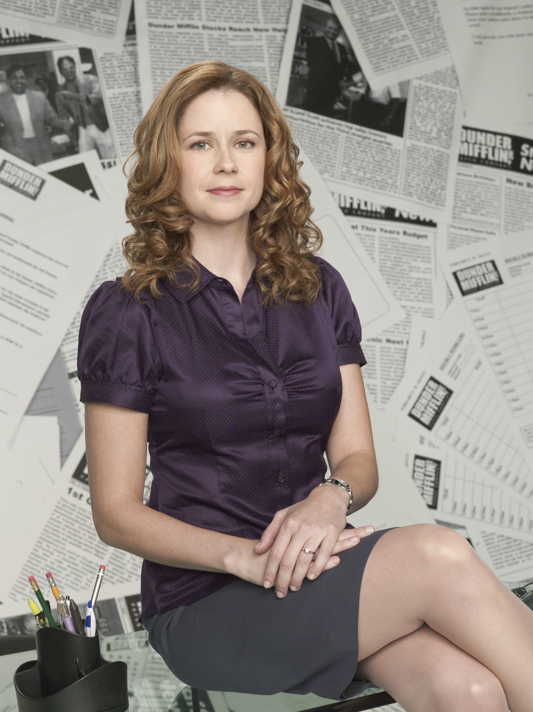

"Limitless Paper in a Paperless World"
Pam Beesley

At Work, Pam:
- Identifies new clients to sell our products and services to.
- Ensures that our current clients paper needs are met.
- Promotes Dunder Mifflin's products to key stakeholders.
Outside of Dunder Mifflin
Pam Likes To:
- Paint! Pam is the most artistic person in the office by far.
- Take care of her young daughter Cece.
- Organize office events for co-workers to do together outside of the office.
Three Key Reasons:
- I used to be the office receptionist. My co-workers really helped make it a smooth transition into being a Sales Representative.
- I love the company culutre! The employees of Dunder Mifflin are the best.
- Everyone is extremely supportive towards whatever you want to do inside and outside of the office.